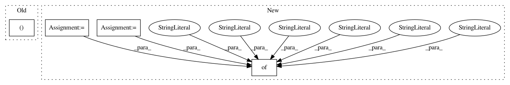

bf4dab3501c62836f94ea17d2f0e198348f5293d,tests/keras/layers/test_core.py,,test_maxout_dense,#,155
Before Change
def test_maxout_dense():
layer = core.MaxoutDense(10, 10, input_shape=(20,))
_runner(layer)
After Change
input_shape=(3, 2))
layer_test(core.MaxoutDense,
kwargs={"output_dim": 3,
"W_regularizer": regularizers.l2(0.01),
"b_regularizer": regularizers.l1(0.01),
"activity_regularizer": regularizers.activity_l2(0.01),
"W_constraint": constraints.MaxNorm(1),
"b_constraint": constraints.MaxNorm(1)},
input_shape=(3, 2))
In pattern: SUPERPATTERN
Frequency: 3
Non-data size: 4
Instances
Project Name: keras-team/keras
Commit Name: bf4dab3501c62836f94ea17d2f0e198348f5293d
Time: 2016-03-31
Author: francois.chollet@gmail.com
File Name: tests/keras/layers/test_core.py
Class Name:
Method Name: test_maxout_dense
Project Name: keras-team/keras
Commit Name: bf4dab3501c62836f94ea17d2f0e198348f5293d
Time: 2016-03-31
Author: francois.chollet@gmail.com
File Name: tests/keras/layers/test_core.py
Class Name:
Method Name: test_dense
Project Name: keras-team/autokeras
Commit Name: c64c9eeb8120a5f293de07a0992714d522453a55
Time: 2018-12-28
Author: chenwydj@gmail.com
File Name: autokeras/pretrained/object_detector.py
Class Name: ObjectDetector
Method Name: predict